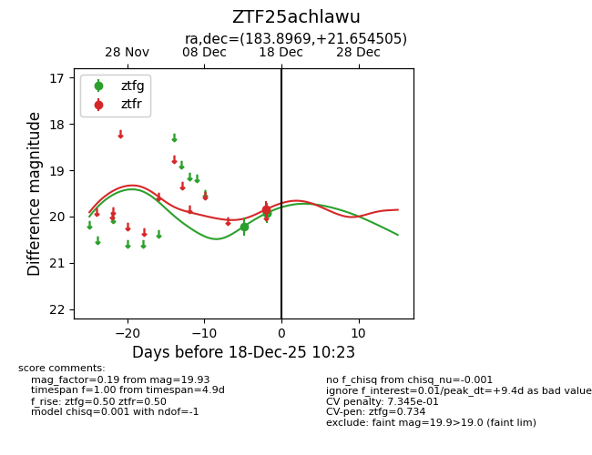
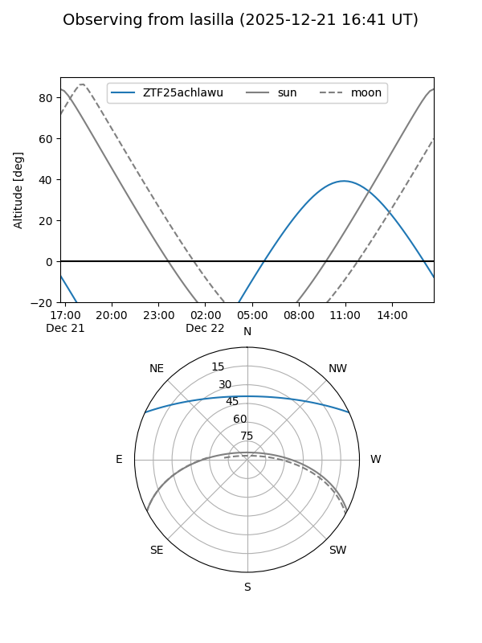
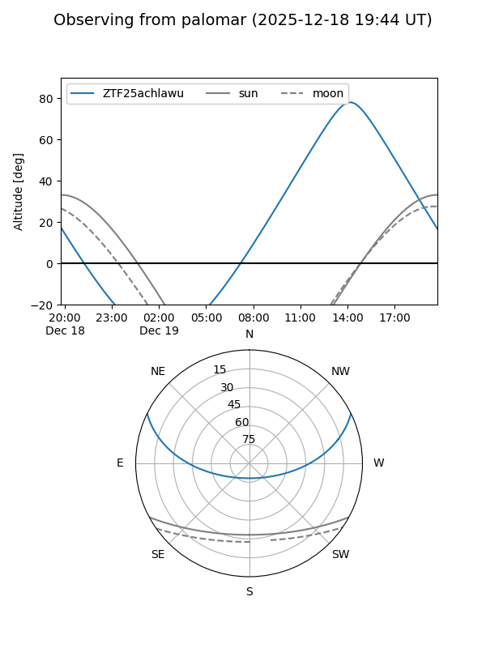

ZTF25achlawu
Target ZTF25achlawu at 2025-12-18 11:18
Aliases and brokers:
FINK: fink-portal.org/ZTF25achlawu
Lasair: lasair-ztf.lsst.ac.uk/objects/ZTF25achlawu
ALeRCE: alerce.online/object/ZTF25achlawu
alt names
ZTF25achlawu (ztf,fink_ztf)
Coordinates:
equatorial (ra, dec) = 183.8969,+21.65450
equatorial (HMS+DMS) = 12:15:35.25,+21:39:16.22
galactic (l, b) = (244.8571,+80.17729)
Photometry
last ztfg=19.93, ztfr=19.84
3 ztfg, 1 ztfr detections
Lightcurve

Visibility


Additional plots